At Valgus Creative Studio, we believe creativity is the engine that drives innovation. We're not just designers or developers we're builders of experiences, storytellers through visuals, and problem-solvers through technology. Our work lives at the intersection of design and development. We craft striking graphic identities that make brands unforgettable. We design modern, responsive websites that don't just look good they perform. We develop software solutions that simplify complex processes. We build mobile apps that feel seamless and intuitive. But beyond the screens and code, we are creators at heart. Photography inspires our perspective. Digital art fuels our imagination. Branding challenges us to think strategically. Emerging technologies push us to stay curious. Every project is an opportunity to blend logic with creativity structure with style. Valgus is more than a creative studio it's a collaborative space for thinkers, innovators, and dreamers. We embrace bold ideas, experiment with fresh concepts, and continuously evolve with the digital world around us. This blog is where we open the doors to our process. Here, we'll share creative insights, project breakdowns, design inspiration, development tips, and the stories behind the work we're proud of. Whether you're a brand looking to grow, a fellow creative seeking inspiration, or a tech enthusiast exploring new possibilities you're in the right place. At Valgus, we don't just create for today. We design and build for what's next.